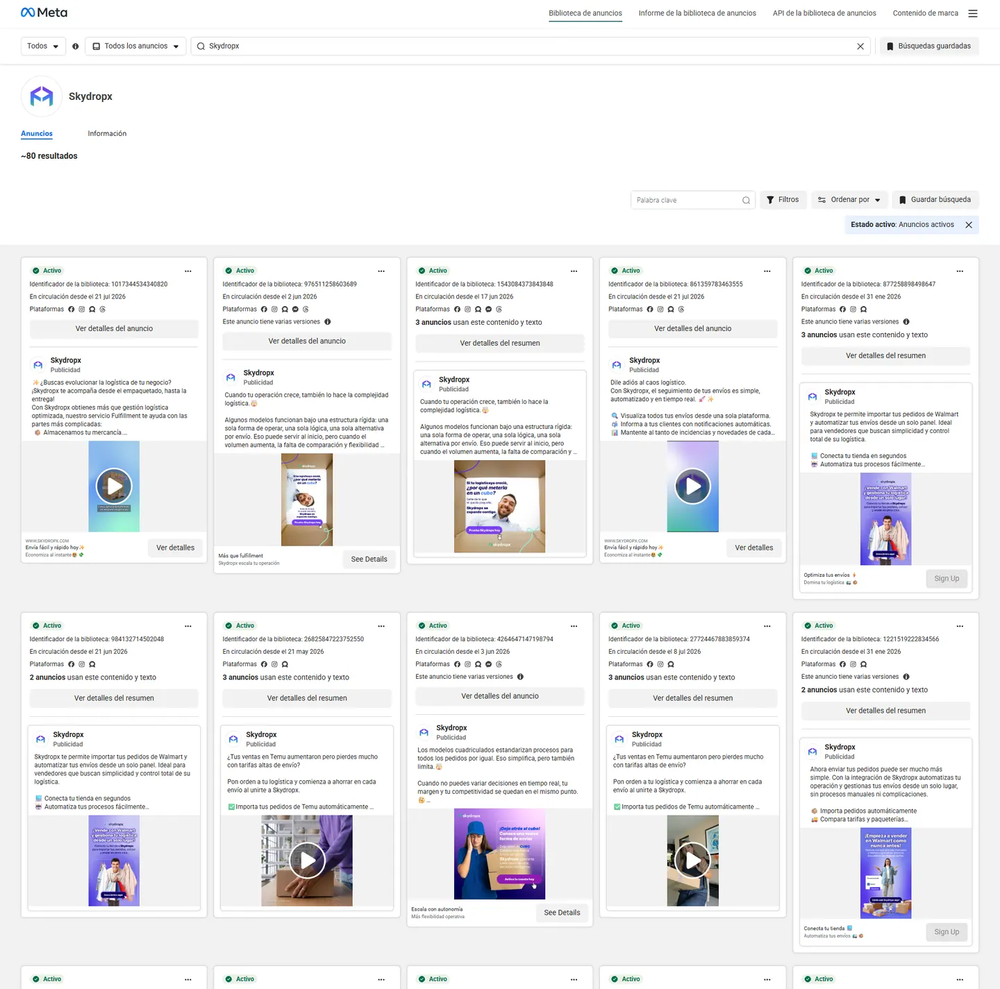

Evergreen operativo
Integraciones, Walmart, comparación de paqueterías, rastreo y automatización como razones estables para registrarse.
Referencia adyacente · corte 27 oct 2026
Lectura de su publicidad activa para identificar patrones de verticalización, oferta, formatos y experimentación que Loyevo puede adaptar sin copiar su modelo.
Evidencia observada
La biblioteca muestra anuncios activos con distintos mensajes, destinos y fechas de inicio. La permanencia indica continuidad, pero no permite conocer inversión, rentabilidad ni resultados reales.

Evolución visible
La secuencia creativa sugiere una marca que mantiene beneficios permanentes mientras abre verticales y prepara ofertas para momentos de mayor demanda.
Integraciones, Walmart, comparación de paqueterías, rastreo y automatización como razones estables para registrarse.
Mensajes específicos para sellers de Temu y una narrativa de flexibilidad frente a modelos de fulfillment rígidos.
Reactivación del concepto “sal de la caja” para sostener consideración antes de la ofensiva comercial.
Oferta de entrada, llamados a margen, variantes de video, formularios nativos y colaboración con creador.
Hallazgos transferibles
El aprendizaje está en cómo convierten un producto complejo en mensajes modulares por segmento, momento e intención.
Walmart y Temu sustituyen al genérico “dueño de e-commerce”. El usuario se reconoce antes de evaluar la plataforma.
Para Loyevo: probar corredor + caso de uso, no cobertura nacional genérica.
Las ofertas de alta intención usan registro o formularios; el discurso B2B dirige a contenido para nutrir y retargetear.
Para Loyevo: cotización directa para urgencia y contenidos de confianza para objeciones.
50 envíos a $50 MXN hace tangible el beneficio y elimina incertidumbre de entrada antes del Buen Fin.
Para Loyevo: incentivo limitado por corredor, medido hasta mandado entregado.
Se observan múltiples versiones, duraciones y formatos; algunos anuncios muestran etiquetas de impresiones bajas.
Para Loyevo: cuadro de materiales de noviembre con hipótesis, hook, formato, CTA y criterio de corte.
“Sal de la caja” convierte rigidez, falta de elección y pérdida de margen en un territorio narrativo consistente.
Para Loyevo: contrastar favor informal y envío tradicional con trazabilidad, velocidad y acompañamiento.
La colaboración con una creadora presenta la logística desde el momento posterior al sold out, no desde el software.
Para Loyevo: historias reales de primer mandado y rutas cotidianas, con permiso y evidencia.
Lectura comparada
Skydropx es un benchmark de adquisición y comunicación logística, no un competidor idéntico: agrega operadores y tecnología; Loyevo articula viajeros y mandantes.
Centralización, comparación, automatización e integraciones para comercios con volumen.
Un modelo colaborativo cuya promesa depende del corredor, el match y una entrega confiable.
Adoptar la disciplina de mensajes y pruebas sin trasladar mecánicamente promociones ni promesas.
Aplicación inmediata
La investigación se convierte en cinco líneas de trabajo para ordenar la siguiente producción de piezas de Loyevo.
Piezas para documentos, llaves, regalos y encargos que necesitan llegar pronto entre ciudades concretas.
Viajeros verificados, pago protegido, evidencia de recogida y entrega, soporte humano y casos reales.
Continuar el formato de vocero ya implementado y probar hooks de 3 segundos, demostración y objeción.
Diseñar un incentivo acotado y comparar su efecto contra control en cotización, pago y entrega.
Hablar primero de enviar, llevar y recibir. Reservar términos internos como «mandante» para cuando el usuario ya comprenda cómo funciona Loyevo.